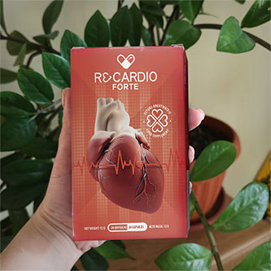

Гипертония может не проявлять себя годами. Повышенное давление списывают на усталость, погоду или особенность организма. Когда появляются головные боли, бессонница или затрудненное дыхание, то в последнюю очередь думают на проблемы с сердцем. “Со мной все в полном порядке, просто жарко на улице”, – говорила моя мама, когда у нее появилась отдышка.
Мне страшно вспоминать тот день, когда я могла потерять ее… Примерно за 2 месяца до сердечного приступа она стала быстро уставать и жаловаться на головные боли. При всем этом давление не было высоким – 135/90. В день приступа мама чувствовала себя нормально и поехала в магазин. Позже мне позвонили из больницы и сказали, что она в реанимации. Все обошлось.
Восстановление было очень долгим, и приступ мог повториться в любой момент. Давление по прежнему было 150/95. От большого количества таблеток пришли плохие анализы, что грозило развитием почечной недостаточности. Нужно срочно снизить количество ежедневно потребляемых таблеток. Но как? Ведь без них состояние моментально ухудшается.

Мы обратились за помощью в European Society of Cardiology. Кардиолог Vincent Chapman объяснил, что резко отменять назначенные препараты нельзя. Необходимо очистить сосуды и привести их в тонус. И только тогда постепенно снижать дозировку лекарств. Для чистки и укрепления сосудов он прописал Recardio.
Мама пропила курс и стала чувствовать себя гораздо лучше. Стала просыпаться бодрой, а не с головными болями. Прошли боли в груди, одышка и усталость. Общее состояние улучшилось, а анализы показывали нормальный уровень холестерина. Постепенно лечащий врач снизил дозировку лекарств. Через полгода по совету кардиолога мама пропила еще один курс Recardio.